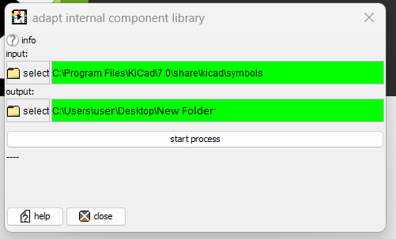
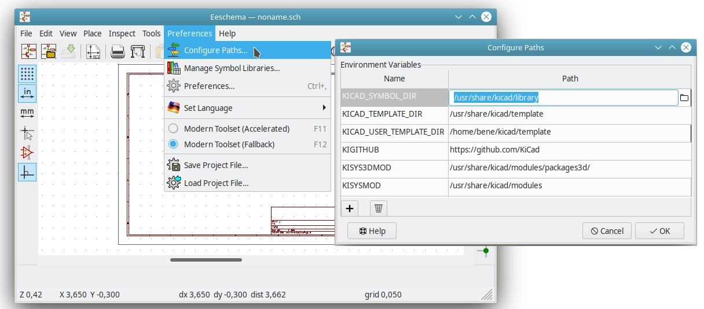

What does this dialog do?
This dialog takes an internal library (a folder of .alib files) and a matching external library (a folder of kicad_sym files)
and creates a new internal library, which combines the information of both libraries.
It fills the alib files in the output folder with all the information of the internal library and adds symbol sections of the external
library where no symbol exists yet.
How to do this
Enter the folders of the kicad symbols and the output folder into their fields.
It should look like this:

What is an ".alib"-file?
".alib" stands for "advanced library".
It is a file which describes the different types of electric circuit components in the Animated CAD.
What is a ".kicad_sym" file?
".kicad_sym" stands for "KiCad symbol". It is a file which describes the symbols of electric circuit components in KiCad.
Where do I find the ".alib" file folder?
To create an alib file folder, you can use any empty folder. As shown above, the output folder is "New Folder"
If you also want to move the output into the internal alib file folder of the Animated CAD:
Usually you find it in the folder where you have installed the Animated CAD, in the sub-folder called libraries
In most cases, you need the /libraries/eeschema_only folder, since you might
want to combine your alib library with KiCad eeschema files.
Where do I find the ".kicad_sym" file folder?
You only have such a folder only if you have installed Kicad. For this procedure to work, you need at least version Kicad 6,
which was released in 2022.
Open your KiCad window, open "Preferences" -> "Configure Paths"
A dialog window will appear, search for the path which is named "KICAD_SYMBOL_DIR".
(Make sure that this path is the one that is similar as the ones as KICAD_TEMPLATE_DIR.)
That is the path you need in most cases.
